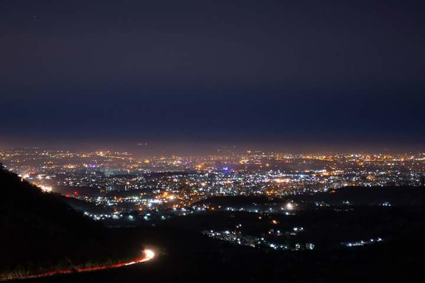
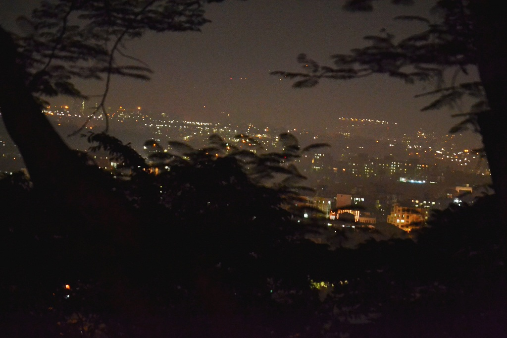
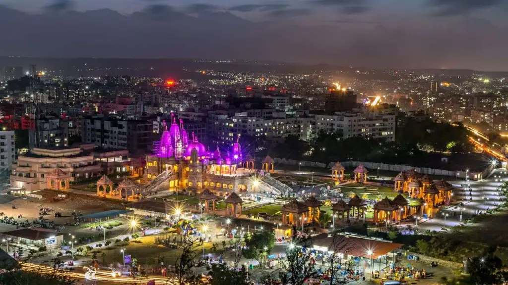
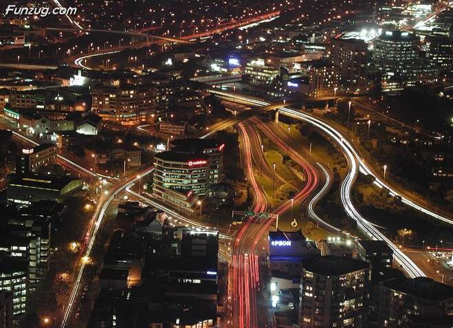

Pune

Pune has historically been a major cultural centre, with important figures like Dnyaneshwar
, Shivaji, Tukaram, Baji Rao I, Balaji Baji Rao, Madhavrao. I, Nana Fadnavis, Mahadev Govind Ranade, Gopal Krishna Gokhale, Mahatma Jyotirao
Phule, Savitribai Phule, Gopal Ganesh Agarkar, Tarabai Shinde, Dhondo Keshav Karve, and Pandita Ramabai doing their life's work in Pune City
or in an area that falls in Pune Metropolitan Region.
Pune was a major centre of resistance to British Raj, with people like Gopal Krishna Gokhale.
Bal Gangadhar Tilak and Vinayak Damodar Savarkar playing leading roles in struggle for Indian independence in their times.
- Pune has historically been a major cultural centre, with important figures like Dnyaneshwar, Shivaji
- Pandita Ramabai doing their life's work in Pune City
- Pune was a major centre of resistance
- Indian independence in their times
- Ramabai doing their life's work in Pune City or in an area that falls in Pune Metropolitan Region
| Year | Population | Percentage |
|---|---|---|
| 1851 | 75000 | - |
| 1891 | 1,23,000 | +62.7% |
| 1901 | 1,53,319 | +29.1% |
| 1911 | 1,58,856 | +3.6% |
| 1921 | 1,96,232 | -0.2% |
 

 